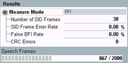

Mode BFI
The BFI test verifies the effectiveness of the MS under DTX conditions.
The BFI is measured on a full or half rate speech by counting the number of undetected bad frames.
During the test, the R&S CMW simulates DTX operation. Loop A is required during the test. From the looped back signal, the R&S CMW records the number of frames where the bad frame indication (BFI) is not set.
The mode "BFI" is only possible in the DTX DL operation, see "DTX DL". |
The BFI tests are specified in 3GPP TS 51.010, section 14.1.
For background information, see "Test Loops".

BER CS results (BFI mode)
- Number of SID frames: number of silence insertion descriptor (SID) frames that have been sent.
- SID frame error rate: number of SID frames that the MS did not receive relative to the total number of sent SID frames.
- False BFI rate: the relative number of DTX frames that the MS did not recognize as bad frames. SID frames have no impact on the false BFI rate.
- CRC errors: number of speech frames with failed CRC check. The check is performed in the R&S CMW on looped-back speech frames.
- Speech frames: number of already evaluated speech frames and total number of speech frames to be evaluated.